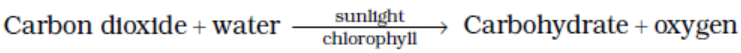
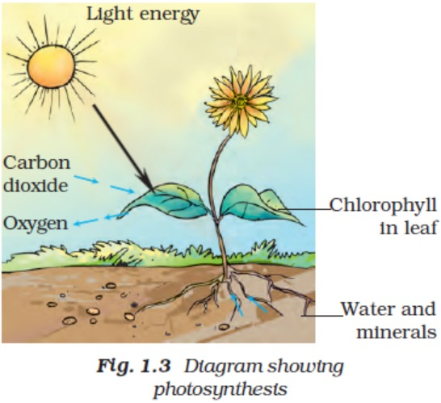

1. Why do organisms take food?
Solution:
All organisms require energy for their life processes. Plants prepare their food and acquire nutrients from abiotic components like soil, air, water and sunlight. On the other hand, animals need to get food from either plants or other animals to obtain nutrients; hence animals need to take food to acquire nutrients and energy
2. Distinguish between a parasite and a saprophyte.
Solution:
Saprophytes Parasites
Acquire nutrients from dead and decaying matter Parasites live on or in a host and get its food at the expense of its host
Example: Fungi Example: roundworm
3. How would you test the presence of starch in leaves?
Solution:
Take two potted plants of the same kind. Keep one in the dark for 72 hours and the other in sunlight. Perform the iodine test with the leaves of both the plants as given below. Now leave the pot which was earlier kept in the dark, undisturbed for 3 – 4 days and perform the iodine test again on its leaves.
Iodine test:
Put iodine solution on the leaf
Observation:
Blue-black colour will be observed on the leaves of the plant kept in sunlight, which indicates the presence of starch.
Blue-black colour will not be observed on the leaves of plant kept in the darkroom. This indicates the absence of starch.
4. Give a brief description of the process of synthesis of food in green plants
Solution:
Green plants use a process called as photosynthesis to prepare their food. The process is as follows
Water is taken from the roots of the plant, and it is transported to leaves of the plant.
Carbon dioxide from air enter the leaves through pores called stomata. This diffuses the cell containing chlorophyll.
Water molecule is broken down into Hydrogen and Oxygen with the help of sunlight.
Hydrogen combines with Oxygen and Hydrogen to form carbohydrates.
Photosynthesis is represented by the following equation.

5. Show with the help of a sketch that plants are the ultimate source of food.
Solution:
